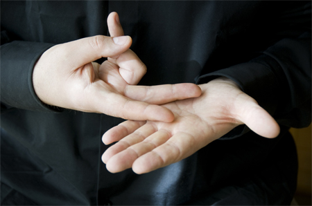

Deletreando ando
Leccion 2
Abecedario

Marcadores
Comunícate
Noticias

Instituto nacional de sordos

Noticias sobre el lenguaje de señas
Wait a minute. Wait a minute, Doc. Uhhh... Are you telling me that you built a time machine... out of a DeLorean?! Whoa. This is heavy.